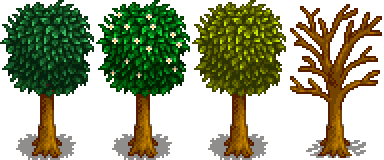
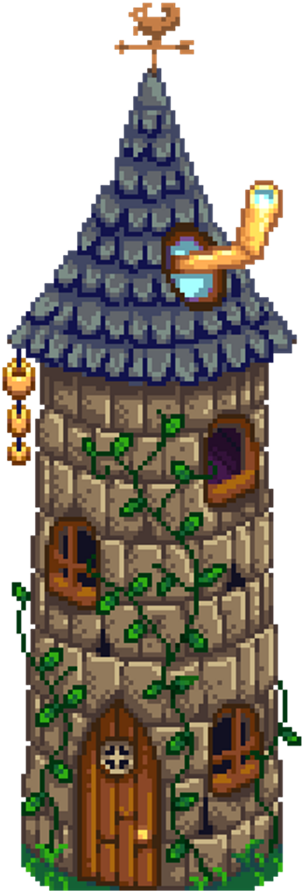

I'm Umut.
a farmer.
 This web page's aim is to find people for playing Stardew Valley together. So if you want to play with me after you take a look at the web page, you can contact me.
This web page's aim is to find people for playing Stardew Valley together. So if you want to play with me after you take a look at the web page, you can contact me.
These are my favorite animal and crop in Stardew Valley. Below, I explained why they're my favorites and why I like them most in this game.

Chicken is my favorite animal because they are so cute and most of ours first farm animal in Stardew Valley. So that's the reason why chicken is my favorite animal.

Starfruit is my favorite crop in this game. Because it's really precious and valuable. It also definetely worths to set out when you turn it into vine and sell it.
If you want to play Stardew Valley with me you can contact me from here through my e-mail or you can contact through my Steam and Twitter at the bottom of the page.
CONTACT ME